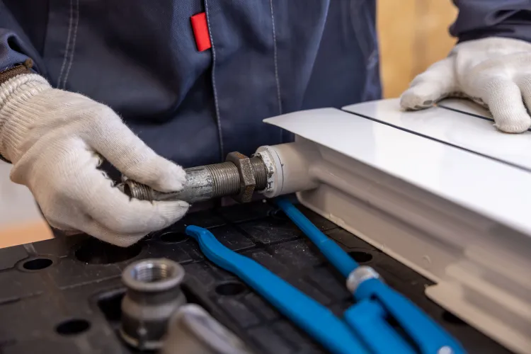
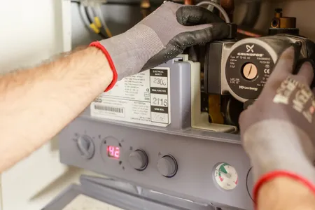

4.9
From 7,000+ reviews in Owensboro
Slab Leak Detection in Owensboro, KY - Same-Day Service, No Damage Digging
When you need Slab Leak Detection in Owensboro, our experts are ready to help. We specialize in identifying and resolving leaks quickly, ensuring your home remains safe and dry. Count on us for the best slab leak detection Owensboro has to offer.
- Licensed & Insured
- Transparent Pricing
- Same-Day Service
- 24/7 Emergency
Call Now: (270) 802-0157
Call (270) 802-0157 right now for an immediate over-the-phone consultation and same-day scheduling.
Licensed
Licensed & Bonded
Fully Insured
Insured & Bonded
24/7 Emergency
Same-Day Response
Warranty Backed
Workmanship Guaranteed in Owensboro


15+
Years Local Trade
Trusted Slab Leak Detection Services in Owensboro
Owensboro Leak Detection Experts has been providing professional, non-invasive slab leak detection in Owensboro and across Daviess County since 2008. Owensboro’s older housing stock - particularly homes built in the mid-20th century in neighborhoods near Chautauqua Park and downtown - frequently suffers from sub-floor plumbing failures due to copper pipe electrolysis and pinhole wear. Our local technicians use state-of-the-art acoustic listeners and thermal imagers to locate water line leaks beneath concrete slabs without destroying your flooring.
Operating near the Ohio River means dealing with unique soil challenges. Shifting clay deposits and seasonal groundwater expansion cause foundation settlement, putting immense shear stress on underground water and sewer lines. We are proud to offer certified same-day diagnostics 24/7, helping homeowners in West Louisville, Philpot, and Owensboro prevent costly structural erosion.
3,200+
Jobs Completed
4.9★
Google Rating
24/7
Emergency Line
Comprehensive Slab Leak Detection Services
Our slab leak detection services in Owensboro are designed to identify and resolve leaks efficiently. We offer emergency slab leak detection Owensboro residents can trust.

Slab Leak Repair
View DetailsElectronic Leak Detection
View Details
Infrared Leak Detection
View DetailsAcoustic Leak Detection
View Details
Underground Pipe Leak Detection
View DetailsWater Line Leak Detection
View DetailsHot Water Line Leak Detection
View DetailsCold Water Line Leak Detection
View DetailsEmergency Slab Leak Detection
View Details
BBB AccreditedEPA CertifiedAngi ProHomeAdvisorNATE CertifiedGoogle Verified
Why Choose Our Slab Leak Detection in Owensboro?
We are dedicated to providing effective slab leak detection services in Owensboro. Our experts are licensed, insured, and equipped with the latest technology.
-
Certified and Experienced Technicians Our team consists of certified leak detection specialists with years of experience. We respond quickly, often within an hour, to address your plumbing needs.
-
Advanced Technology for Accurate Results Utilizing tools like moisture meters and thermal imaging cameras, we ensure accurate leak detection, minimizing disruption to your property.
-
Affordable and Transparent Pricing We offer competitive pricing for slab leak detection services Owensboro residents can rely on. No hidden fees, just honest service.
98%
Of our customers refer us within the first year.
Straight-Forward Pricing
Three clear ways to work with us - no hidden fees, no high-pressure upsells. Every quote is in writing before any work starts.
Basic Service
$89 starting · per visit
- Diagnostic visit
- Written estimate
- Same-day scheduling
- Standard 30-day warranty
Standard Repair
$249 average job
- Includes diagnostic
- Most repairs same visit
- Genuine parts included
- 1-year workmanship warranty
Premium Care
$499 annual plan
- Two scheduled inspections
- Priority emergency response
- Discounted parts and labor
- 5-year workmanship warranty
How Our Slab Leak Detection Works
Our streamlined process ensures efficient and effective slab leak detection for your home.
01
Initial Consultation
We start with a consultation to understand your concerns. Our technicians will ask questions about any signs of leaks you've noticed.
02
Advanced Leak Detection
Using our specialized tools, including acoustic listening devices and thermal imaging cameras, we pinpoint the exact location of the leak.
03
Repair Solutions
After identifying the leak, we provide you with repair options and a transparent estimate to resolve the issue effectively.
Common Slab Leak Problems We Solve
Slab leaks can lead to significant damage if not addressed promptly. Here are common issues we tackle.
01
Increased water bills due to leaks
(Our Fix)Our slab leak detection services in Owensboro help identify leaks quickly, saving you from inflated water bills and potential property damage.
02
Water pooling around your foundation
(Our Fix)If you notice water pooling, it may indicate a slab leak. We use advanced detection methods to locate the source and prevent further damage.
03
Cracks in walls or floors
(Our Fix)Cracks can be a sign of a slab leak. Our team will assess the situation and provide effective repair solutions to restore your home.
What Our Customers Say
Hear from our satisfied customers who have experienced our slab leak detection services.
“Owensboro Leak Detection Experts found a leak I had been worrying about for weeks. They were prompt and professional, saving my home from major damage.”
S
Sarah M.
Homeowner, Owensboro KY
“I called them for emergency slab leak detection, and they arrived within an hour! Their team was knowledgeable and fixed the issue quickly.”
J
John D.
Business Owner, Masonville KY
“Their infrared leak detection technology is impressive. They found my leak without tearing up my floor. Highly recommend!”
E
Emily R.
Homeowner, Philpot KY
“I was worried about the cost, but Owensboro Leak Detection Experts provided a fair estimate and did great work. I'm very satisfied.”
M
Mike T.
Homeowner, Thruston KY
“After experiencing water damage, I contacted them for slab leak detection. They were thorough and professional, and I appreciate their help.”
L
Linda K.
Homeowner, Sorgho KY
“Fast, reliable service! They found the leak and explained everything clearly. I will definitely use them again if needed.”
T
Tom H.
Homeowner, Maceo KY
Service Area
Slab Leak Detection Coverage Across Owensboro & Daviess County
Routine and same-week appointments for residents and businesses across Daviess County, including the ZIP codes below.
423014230342304
Frequently Asked Questions About Slab Leak Detection in Owensboro
Here are some common questions we receive about our slab leak detection services.
What are the signs of a slab leak in Owensboro?
Common signs of a slab leak include water pooling around your foundation, cracks in walls or floors, and unusually high water bills. If you notice any of these, it's time to call for slab leak detection services.
How much does slab leak detection cost in Owensboro?
The cost of slab leak detection in Owensboro can vary based on the complexity of the job. Generally, prices range from $200 to $500. We provide free estimates to ensure transparency.
Where can I find slab leak detection services in Owensboro?
You can find reliable slab leak detection services in Owensboro through local plumbing experts like Owensboro Leak Detection Experts. We are available 24/7 for your convenience.
Can I get emergency slab leak detection in Owensboro?
Yes, we offer emergency slab leak detection services in Owensboro. Our team is available 24/7 to address urgent plumbing issues and prevent further damage.
How long does slab leak detection take?
The duration for slab leak detection varies but typically takes 1-2 hours. Our technicians work efficiently to minimize disruption while ensuring accurate results.
Get Immediate Slab Leak Detection in Owensboro
Don't wait for water damage to escalate. Contact us for prompt slab leak detection services and protect your home today.
Get in Touch with Us
We're here to help with your slab leak detection needs. Call (270) 802-0157 right now for an immediate over-the-phone consultation and same-day scheduling.
Call (270) 802-0157 for Immediate Service
Our local slab leak experts are available 24/7 to answer your call and schedule same-day diagnostics.
Call (270) 802-0157 NowOwensboro Leak Detection Experts
-
Phone
(270) 802-0157 -
Address
PRWQ+8H8 Owensboro, Kentucky, USA, Owensboro, KY, Owensboro
-
Hours
Mon–Fri: 7AM – 7PM
Sat: 8AM – 4PM
Sun: Emergency Only
24/7 Emergency Available